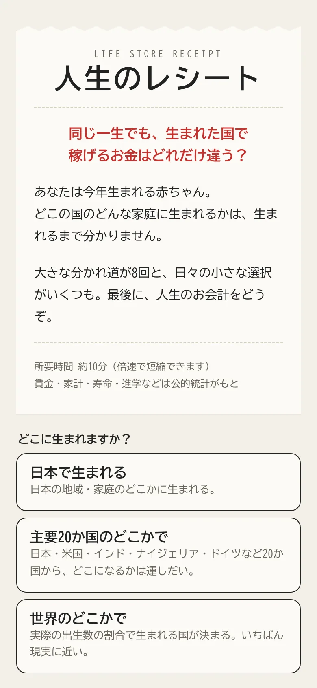
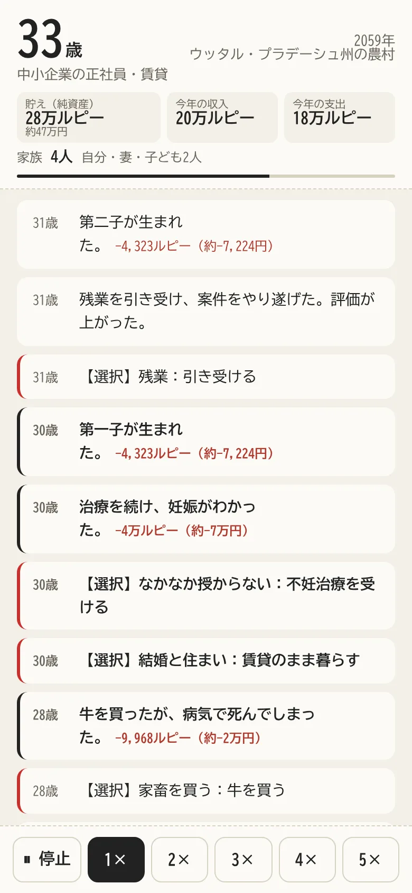
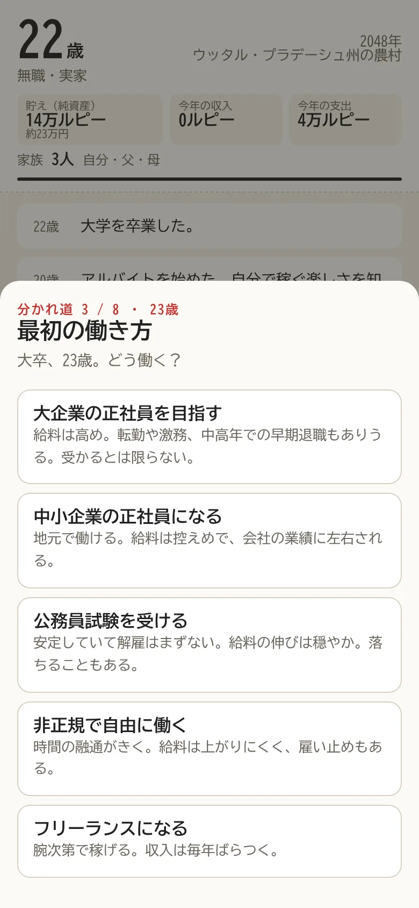
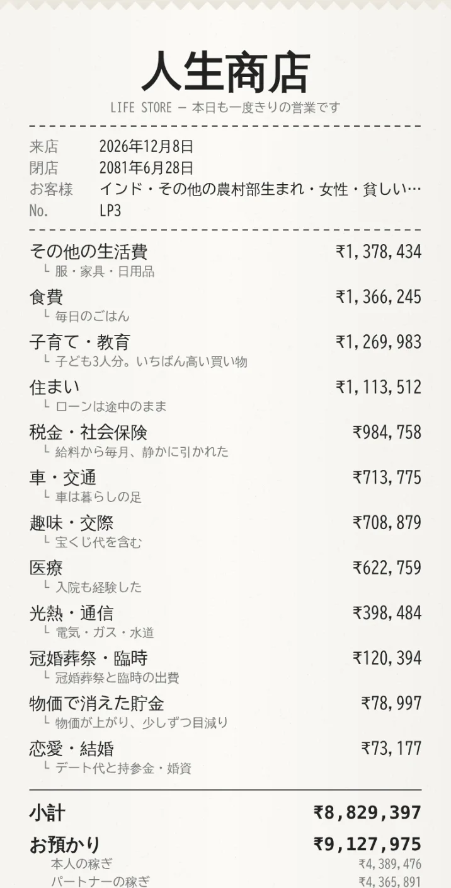

1
生まれる場所を選ぶ
「日本」「主要20か国」「世界」から選びます。世界を選ぶと、実際に生まれる赤ちゃんの数の割合で国が決まり、都市や農村、家庭の収入もそこで決まります。
生まれる国と家庭は、生まれるまで分かりません。公的な統計データをもとに、一生ぶんのお金の流れを約10分で体験するブラウザゲームです。
生まれてみる無料・登録なし・スマホでそのまま遊べます

「日本」「主要20か国」「世界」から選びます。世界を選ぶと、実際に生まれる赤ちゃんの数の割合で国が決まり、都市や農村、家庭の収入もそこで決まります。

進学、最初の働き方、結婚と住まい、親の介護など、大きな分かれ道が8回。日々の小さな選択もたくさん出てきます。正解はありません。運と、その国の現実が重なっていきます。

ゲームの中で各国400人の人生を動かしたときの、本人が生涯で稼いだお金の中央値です。現地通貨の金額を今の為替で円に直しています。物価が違うので、暮らしの豊かさをそのまま比べたものではありません。

1回の体験は約10分。倍速もあるので、授業の中で一人ひとりが自分の人生を体験し、結果を持ち寄って話し合えます。
無料です。登録やログインも必要ありません。ブラウザで開くだけで遊べます。
1回およそ10分です。画面下のボタンで最大5倍速まで速められます。
どちらでも遊べます。スマホの縦画面に合わせて作っています。
「日本で生まれる」を選べば必ず日本に生まれます。「主要20か国」「世界」では、どの国になるかは毎回の運しだいです。
公的な統計をもとにしていますが、一人ひとりの人生を正確に予測するものではありません。国による違いや、選択による違いを感じるための試算です。
よかったところ、分かりにくかったところ、直してほしいところ。ひとことでも、これからの改善に使わせていただきます。
いただいた内容は、すべて読んで改善の参考にします。